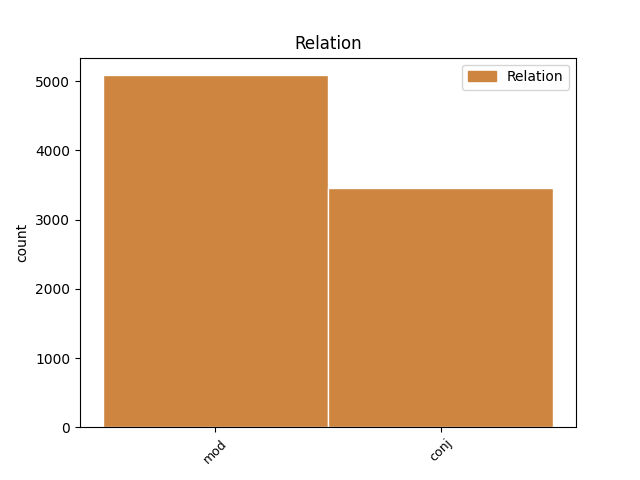
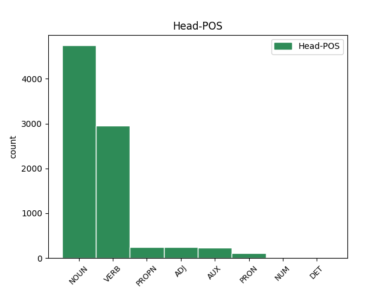
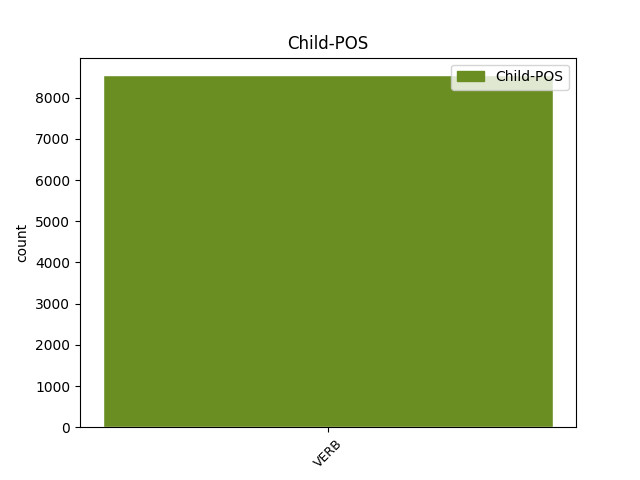

Distribution of features within this leaf



Agreement Rules sorted by frequency.
- When the dependent token is the modifer(mod) of the head token, and the dependent token is VERB.
1 Он _ _ _ _ 0 _ _ _
2 осторожно _ _ _ _ 0 _ _ _
3 , _ _ _ _ 0 _ _ _
4 за _ _ _ _ 0 _ _ _
5 дужку _ _ _ _ 0 _ _ _
6 , _ _ _ _ 0 _ _ _
7 снял _ _ _ _ 0 _ _ _
8 очки _ _ _ _ 0 _ _ _
9 , _ _ _ _ 0 _ _ _
10 ему _ _ _ _ 0 _ _ _
11 хотелось _ _ _ _ 0 _ _ _
12 получше _ _ _ _ 0 _ _ _
13 рассмотреть _ _ _ _ 0 _ _ _
14 человека человек NOUN _ Animacy=Anim|Case=Acc|Gender=Masc|Number=Sing 0 _ _ _
15 , _ _ _ _ 0 _ _ _
16 задающего задавать VERB _ Animacy=Anim|Aspect=Imp|Case=Acc|Gender=Masc|Number=Sing|Tense=Pres|VerbForm=Part|Voice=Act 14 mod _ _
17 такие _ _ _ _ 0 _ _ _
18 несуразные _ _ _ _ 0 _ _ _
19 вопросы _ _ _ _ 0 _ _ _
20 , _ _ _ _ 0 _ _ _
21 а _ _ _ _ 0 _ _ _
22 припылившиеся _ _ _ _ 0 _ _ _
23 стекла _ _ _ _ 0 _ _ _
24 только _ _ _ _ 0 _ _ _
25 мешали _ _ _ _ 0 _ _ _
26 . _ _ _ _ 0 _ _ _
1 Он _ _ _ _ 0 _ _ _
2 задумался задуматься VERB _ Aspect=Perf|Gender=Masc|Mood=Ind|Number=Sing|Tense=Past|VerbForm=Fin|Voice=Mid 0 _ _ _
3 , _ _ _ _ 0 _ _ _
4 чуть _ _ _ _ 0 _ _ _
5 перекосив _ _ _ _ 0 _ _ _
6 худенькое _ _ _ _ 0 _ _ _
7 лицо _ _ _ _ 0 _ _ _
8 , _ _ _ _ 0 _ _ _
9 и _ _ _ _ 0 _ _ _
10 даже _ _ _ _ 0 _ _ _
11 перестал перестать VERB _ Aspect=Perf|Gender=Masc|Mood=Ind|Number=Sing|Tense=Past|VerbForm=Fin|Voice=Act 2 conj _ _
12 выдергивать _ _ _ _ 0 _ _ _
13 цветы _ _ _ _ 0 _ _ _
14 и _ _ _ _ 0 _ _ _
15 травинки _ _ _ _ 0 _ _ _
16 , _ _ _ _ 0 _ _ _
17 в _ _ _ _ 0 _ _ _
18 его _ _ _ _ 0 _ _ _
19 коричневых _ _ _ _ 0 _ _ _
20 глазах _ _ _ _ 0 _ _ _
21 появилась _ _ _ _ 0 _ _ _
22 боль _ _ _ _ 0 _ _ _
23 - _ _ _ _ 0 _ _ _
24 так _ _ _ _ 0 _ _ _
25 трудно _ _ _ _ 0 _ _ _
26 вложить _ _ _ _ 0 _ _ _
27 в _ _ _ _ 0 _ _ _
28 чужую _ _ _ _ 0 _ _ _
29 душу _ _ _ _ 0 _ _ _
30 самые _ _ _ _ 0 _ _ _
31 простые _ _ _ _ 0 _ _ _
32 и _ _ _ _ 0 _ _ _
33 очевидные _ _ _ _ 0 _ _ _
34 истины _ _ _ _ 0 _ _ _
35 ! _ _ _ _ 0 _ _ _
Disagree Examples:
1 В _ _ _ _ 0 _ _ _
2 углу _ _ _ _ 0 _ _ _
3 висел висеть VERB _ Aspect=Imp|Gender=Masc|Mood=Ind|Number=Sing|Tense=Past|VerbForm=Fin|Voice=Act 0 _ _ _
4 репродуктор _ _ _ _ 0 _ _ _
5 и _ _ _ _ 0 _ _ _
6 играло играть VERB _ Aspect=Imp|Gender=Neut|Mood=Ind|Number=Sing|Tense=Past|VerbForm=Fin|Voice=Act 3 conj _ _
7 радио _ _ _ _ 0 _ _ _
8 для _ _ _ _ 0 _ _ _
9 развлечения _ _ _ _ 0 _ _ _
10 ожидающих _ _ _ _ 0 _ _ _
11 и _ _ _ _ 0 _ _ _
12 еще _ _ _ _ 0 _ _ _
13 для _ _ _ _ 0 _ _ _
14 того _ _ _ _ 0 _ _ _
15 , _ _ _ _ 0 _ _ _
16 чтобы _ _ _ _ 0 _ _ _
17 заглушать _ _ _ _ 0 _ _ _
18 голос _ _ _ _ 0 _ _ _
19 начальника _ _ _ _ 0 _ _ _
20 , _ _ _ _ 0 _ _ _
21 доносившийся _ _ _ _ 0 _ _ _
22 из _ _ _ _ 0 _ _ _
23 кабинета _ _ _ _ 0 _ _ _
24 , _ _ _ _ 0 _ _ _
25 так _ _ _ _ 0 _ _ _
26 как _ _ _ _ 0 _ _ _
27 , _ _ _ _ 0 _ _ _
28 бесспорно _ _ _ _ 0 _ _ _
29 , _ _ _ _ 0 _ _ _
30 среди _ _ _ _ 0 _ _ _
31 посетителей _ _ _ _ 0 _ _ _
32 могли _ _ _ _ 0 _ _ _
33 находиться _ _ _ _ 0 _ _ _
34 и _ _ _ _ 0 _ _ _
35 случайные _ _ _ _ 0 _ _ _
36 люди _ _ _ _ 0 _ _ _
37 . _ _ _ _ 0 _ _ _
1 На _ _ _ _ 0 _ _ _
2 этот _ _ _ _ 0 _ _ _
3 раз _ _ _ _ 0 _ _ _
4 Ефимова _ _ _ _ 0 _ _ _
5 выглядела выглядеть VERB _ Aspect=Imp|Gender=Fem|Mood=Ind|Number=Sing|Tense=Past|VerbForm=Fin|Voice=Act 0 _ _ _
6 смелой _ _ _ _ 0 _ _ _
7 и _ _ _ _ 0 _ _ _
8 решительной _ _ _ _ 0 _ _ _
9 и _ _ _ _ 0 _ _ _
10 на _ _ _ _ 0 _ _ _
11 лице _ _ _ _ 0 _ _ _
12 ее _ _ _ _ 0 _ _ _
13 играл играть VERB _ Aspect=Imp|Gender=Masc|Mood=Ind|Number=Sing|Tense=Past|VerbForm=Fin|Voice=Act 5 conj _ _
14 свежий _ _ _ _ 0 _ _ _
15 , _ _ _ _ 0 _ _ _
16 молодой _ _ _ _ 0 _ _ _
17 румянец _ _ _ _ 0 _ _ _
18 . _ _ _ _ 0 _ _ _
1 Но _ _ _ _ 0 _ _ _
2 ей _ _ _ _ 0 _ _ _
3 трудно трудный ADJ _ Degree=Pos|Gender=Neut|Number=Sing|Variant=Short 0 _ _ _
4 , _ _ _ _ 0 _ _ _
5 и _ _ _ _ 0 _ _ _
6 я _ _ _ _ 0 _ _ _
7 поехала поехать VERB _ Aspect=Perf|Gender=Fem|Mood=Ind|Number=Sing|Tense=Past|VerbForm=Fin|Voice=Act 3 conj _ _
8 вместо _ _ _ _ 0 _ _ _
9 нее _ _ _ _ 0 _ _ _
10 . _ _ _ _ 0 _ _ _
1 Наверху _ _ _ _ 0 _ _ _
2 , _ _ _ _ 0 _ _ _
3 надрываясь _ _ _ _ 0 _ _ _
4 , _ _ _ _ 0 _ _ _
5 рокотал _ _ _ _ 0 _ _ _
6 трактор _ _ _ _ 0 _ _ _
7 , _ _ _ _ 0 _ _ _
8 дрожал дрожать VERB _ Aspect=Imp|Gender=Masc|Mood=Ind|Number=Sing|Tense=Past|VerbForm=Fin|Voice=Act 0 _ _ _
9 натянутый _ _ _ _ 0 _ _ _
10 трос _ _ _ _ 0 _ _ _
11 , _ _ _ _ 0 _ _ _
12 и _ _ _ _ 0 _ _ _
13 пушка _ _ _ _ 0 _ _ _
14 еле-еле _ _ _ _ 0 _ _ _
15 ползла ползти VERB _ Aspect=Imp|Gender=Fem|Mood=Ind|Number=Sing|Tense=Past|VerbForm=Fin|Voice=Act 8 conj _ _
16 вверх _ _ _ _ 0 _ _ _
17 , _ _ _ _ 0 _ _ _
18 гребла _ _ _ _ 0 _ _ _
19 снег _ _ _ _ 0 _ _ _
20 колесами _ _ _ _ 0 _ _ _
21 . _ _ _ _ 0 _ _ _
1 Но _ _ _ _ 0 _ _ _
2 и _ _ _ _ 0 _ _ _
3 он _ _ _ _ 0 _ _ _
4 в _ _ _ _ 0 _ _ _
5 этот _ _ _ _ 0 _ _ _
6 момент _ _ _ _ 0 _ _ _
7 тоже _ _ _ _ 0 _ _ _
8 еще _ _ _ _ 0 _ _ _
9 не _ _ _ _ 0 _ _ _
10 знал _ _ _ _ 0 _ _ _
11 , _ _ _ _ 0 _ _ _
12 что _ _ _ _ 0 _ _ _
13 надо _ _ _ _ 0 _ _ _
14 делать _ _ _ _ 0 _ _ _
15 , _ _ _ _ 0 _ _ _
16 и _ _ _ _ 0 _ _ _
17 потому _ _ _ _ 0 _ _ _
18 шел _ _ _ _ 0 _ _ _
19 властно _ _ _ _ 0 _ _ _
20 уверенный _ _ _ _ 0 _ _ _
21 , _ _ _ _ 0 _ _ _
22 холодный _ _ _ _ 0 _ _ _
23 , _ _ _ _ 0 _ _ _
24 собранный _ _ _ _ 0 _ _ _
25 , _ _ _ _ 0 _ _ _
26 похлестывал _ _ _ _ 0 _ _ _
27 прутиком _ _ _ _ 0 _ _ _
28 по _ _ _ _ 0 _ _ _
29 голенищу _ _ _ _ 0 _ _ _
30 : _ _ _ _ 0 _ _ _
31 множество _ _ _ _ 0 _ _ _
32 глаз _ _ _ _ 0 _ _ _
33 смотрело смотреть VERB _ Aspect=Imp|Gender=Neut|Mood=Ind|Number=Sing|Tense=Past|VerbForm=Fin|Voice=Act 0 _ _ _
34 на _ _ _ _ 0 _ _ _
35 него _ _ _ _ 0 _ _ _
36 , _ _ _ _ 0 _ _ _
37 он _ _ _ _ 0 _ _ _
38 чувствовал чувствовать VERB _ Aspect=Imp|Gender=Masc|Mood=Ind|Number=Sing|Tense=Past|VerbForm=Fin|Voice=Act 33 conj _ _
39 их _ _ _ _ 0 _ _ _
40 . _ _ _ _ 0 _ _ _